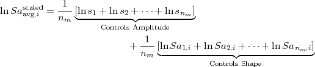
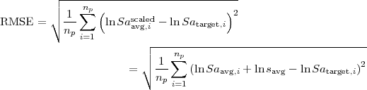

![1 n∑p
lnsavg = --- [ln (Satarget,i) - ln (Saavg,i)]
np i=1](manual3x.png)
SigmaSpectra is a compute program that selects suites of of earthquake ground motions from a library of ground motion such that the median of the suite matches a target response spectrum at all defined periods, and then scales the suite such that the standard deviation agrees with the target standard deviation. The success of the SigmaSpectra in matching the target response spectrum and standard deviation depends on many factors including: the size of the requested suite, the number of motions in the ground motion library, and the appropriateness of the target response spectrum and standard deviation to the motions in the library.
SigmaSpectra is distributed under the GNU General Public License version 3 (GPLv3) which can be found here: http://www.gnu.org/licenses/gpl.txt, or in the installation directory of SigmaSpectra. As part of the GPLv3 license the source code has been made available in the installation file.
The methodology for the scaling of the ground motions used in SigmaSpectra is formally introduction in Kottke and Rathje (2007) and Kottke and Rathje (2008). The major limitation of SigmaSpectra is the complete reliance on the response spectrum for the selection. Therefore, aspects of the ground motion that are not captured in the response spectrum are ignored and need to be checked by the user. The user interaction within the selection process occurs at two stages, during the initial development of the library (see Section 3.3) and the final selection of a suite.
SigmaSpectra uses a two step process. Suites of motions are first selected from the library to match the target response spectrum. The suite motions are then scaled to match the target standard deviation while maintaining agreement with the target response spectrum.
SigmaSpectra scales motions by applying a single scale factor which simply changes the amplitude of the single without changing the frequency content in any manner. A suite of scaled response spectra are typically assumed to be log-normally distributed. For a log-normal distribution the mean and median are the small in log-space. Therefore, the median spectral acceleration of the scaled suite (Saavgscaled) at the i-th period is found by computing the mean log-space:
where nm is the number of motions in the suite, sn is the scale factor of n-th motion, and San,i is the spectral acceleration of the n-th motion at the i-th period. Using the properties of logarithms the average response spectrum can be expanded to:
|  |
This equation shows that the amplitude of the median response spectrum of a suite is controlled by the average of the scale factors (savg). Furthermore, the individual scale factors can be changed without affecting Saavg as long as the average remains the same.
The optimal average scale factor (savg) for a suite of motions can be found by:
where np is the number of periods in the response spectrum. This average scaled factor represents the least-squares fit of the median response spectrum spectrum.
Before discussion of how suites of ground motions are selected, it is necessary to define a measure of the goodness of fit that can be used to compare two different suites. SigmaSpectra uses the root-mean-square-error to quantify the goodness of fit, and is computed by:
|  |
The most rigorous method for selecting a suite of ground motions would be trial of every possible combination. However, depending on the size of the motion library and the required size of the suite, the time required to test each of the trials may be prohibitive (e.g. days to weeks). An alternative approach would be to select a seed motion, and then try each of the remaining motions. Adding the motion that results in the lowest RMSE to the suite. This process is repeated until the desired suite size is achieved. However, this approach suffers from not trying enough combinations.
SigmaSpectra uses a hybrid approach in which the seed combination is generated for a given seed size, and then the iterative approach is used to select the remaining motions. This allows for the number of trials to be tuned by changing the seed size. The rigorous trial of every possible combination can be achieved by setting the seed size to the suite size, or a suite can be built for each motion as a seed motion by setting the seed size to 1.
Consider a normal distribution, that is separated into four equal area (probability) sections. The centroid of each section is found and represents the expected value within the section. For a normal distribution with a mean of zero and a standard deviation of one the four centroids are located at -1.275, -0.325, 0.325, and 1.275. The standard deviation of these values is 0.93, just below the target standard deviation. Using these scale factors (ɛ), the target response spectrum for each centroid is computed by:

where β is an scale factor that adjusts standard deviation of the target standard deviation. The motions in the suite are then sorted based on the mean response over all periods, where the mean response is defined as:
The motion corresponding to the Sa is scaled using the least-squares fit to the centroid curve computed by the smallest ɛ value (-1.275). The same technique is used for each of the remaining motions in the suite. This ordered scaling is used to reduce the relative size of the scale factors (low intensity motions stay relatively low, high intensity motions stay relatively high).
The suite generated with these scale factors may not be the best fit to the target response spectrum. The standard deviation typically exceeds the target standard deviation because of the added variability of each motion. To solve this problem, the standard deviation scale factor β is adjusted from 0 to 3 and the scale factor that results in the best fit to the target standard deviation is selected. The goodness of fit for the standard deviation is measured by the root-mean-square error, defined by:
The use of SigmaSpectra can be simplified to the following five steps:
Each of these steps will be discussed through the use of an example. This introduction to ground motion selection is not to be considered exhaustive.
The scenario event is usually defined by the project. In this example, the scenario event will be a magnitude 7.0 earthquake generated by a strike-slip fault at a distance of 20 km. SigmaSpectra will be used to generate 30 different suites, with each suite containing 10 ground motions. The size of the suite affects the fit of both the median and the standard deviation.
Defining a target response spectrum for a scenario event and application requires the use of judgment and will not be discussed here. However, it is important to point out that it may not be appropriate to use SigmaSpectra to fit every response spectrum. If the response spectrum is representative of a threshold response, instead of a median response, then the use of SigmaSpectra is not encouraged.
For the example scenario, the Abrahamson and Silva (1997) attenuation relation was used to compute the target response spectrum and standard deviation presented in Table 1. These values can be selected with the mouse, copied (Ctrl+c), and pasted (Ctrl+v) to the Target Response Spectrum table in SigmaSpectra. The values can also be pasted by clicking on the table, and the selecting Paste from the Edit menu. The damping used in this in this model is 5%. Because the limited number of periods specified by this model, we will use an interpolated period range. Consistent RMSE values have been found by using at least 60 steps between 0.01 and 5 seconds. For this example, we will use 100 points from 0.01 to 5 seconds.
Data points can also entered by hand. Individual rows are added by clicking on the Add button. To remove a row, select the entire row by clicking on the row number and then click Remove. The entire table can be selected by click on the square region in the upper left hand corner (above the first row counter, and to the left the “Period (s)” column label). To clear the table, click on the Remove button.
|
Before a suite of ground motions can be selected, a library of potential motions must be developed. Care needs to be taken in the selection of ground motions for this library. Each of the motions should be application to the scenario characterized by the target response spectrum. Because of the challenge in selecting appropriate motions no discussion of the subject will be presented here.
Currently, SigmaSpectra only supports the processing of Next Generation Attenuation (NGA) times series which can be downloaded from http://peer.berkeley.edu/nga/earthquakes.html. The NGA database names files based on the recording station and component only. Therefore, two time series from the same station and component have the same name for two different earthquakes. In part of the NGA data organization files are stored in directories corresponding to the earthquake event name. For example, recordings from the Northridge earthquake are all found in the NORTHR folder. It is recommended that a similar convention be used for organizing files for use by SigmaSpectra. The NGA earthquake name can be found in URL for for the ground motion records. For example, link to download the 95∘ component recording at the Wonderland Ave station for the Northridge earthquake is NORTHR/WON095 and the url: http://peer.berkeley.edu/nga_files/ath/NORTHR/WON095.AT2. I would recommend saving the WON095.AT2 file to a directory named NORTHR to maintain organization.
For the example, a catalog of potential motions was selected by searching the NGA strong motion database using the parameters shown in Table 2. These parameters–magnitude range, distance range, faulting mechanism, and rock site conditions–are specified such that a variety of motions are present in the catalog and that each of the motions in the catalog was generated under conditions similar to the scenario. The search resulted in a total of 44 motions, as summarized in Table 3. The motions were recorded from 6 different earthquakes with a majority (38 out of 44) of the motions being recorded for earthquakes with a magnitude below scenario event. Because of the duration being related to the magnitude, the limited number of motions from large magnitude earthquakes may result in combinations with median durations that are shorter than the expected duration of the scenario. If duration were critical in the analysis, the upper limit on the magnitude range could be extended to include more motions with longer durations.
|
|
During the installation the motions for this scenario can be installed by selecting the Example option. The motions are then installed into the example folder of the installation path. Select this folder by clicking on Select Path and selecting the appropriate folder, or by typing in the appropriate path. Once the path is specified, the Motions found box will update with the number of motions recursively found within the specified directory. At this time the number of motions in the suite, seed combination size, and suites to save can all be defined.
Ground motions are recorded at stations and for each event there are three components of recorded (two horizontal and one vertical). The horizontal components are used in most applications, and are the only components that are loaded by SigmaSpectra. The horizontal components for a given event and station are related to eachother. In some cases, it might not be appropriate to create a suite that contains both horizontal components for the same station and event. To limit the suite to only one component per recording station, check the One component per recording station check box. In other cases, such as two-dimensional analysis, the user might want to select pairs of components. This feature is enabled by checking the Combined components check box. The components are combined in log-space, and the station is then selected instead of the components during the selection process, and the same scale factor is applied to each component.
After all of the parameters have been specified, the calculation is started by clicking on the Compute button. Surprisingly, the Cancel button stops the computation. Once the calculation has completed, a dialog opens with the generated suites.
Selection of a suite is from a list of potential suites can take time. SigmaSpectra tries to aid in this process by providing a wealth of information to the user. There are three sources of information in the suite dialog: the suite list table, the motions of the selected suite table, and the various plots.
The suite list table allows the user to see the overall RMSE error for both the response spectrum and standard deviation. A suite can be selected by clicking on the suite or moving up and down with the arrow keys. The rank column allows the user to keep track of the relative rank of each suite. The export column contains a check box that controls whether or not the suite is to be exported.
The motions of selected suite table contains a table of all of the motions within a selected suite. By clicking on a motion, the current motion is painted green in the response spectrum plot. By double clicking on the motion, the time series plots are shown.
The plots are updated as the selection of suite and motions is changed. A motion can be selected from the Individual Response Spectrum plot by clicking on the desired motion.
Suites that have been marked for export are exported with the Export button. The suite can be exported in a variety of formats. The most general use is the comma-separated values format as it also includes the response spectra of each ground motion in the suite. Each suite is exported to a different file name, the prefix of which can be specified.
N. A. Abrahamson and W. J. Silva. Empirical response spectral attenuation relations for shallow crustal earthquakes. Seismological Research Letters, 68(1):94–127, January-Feburary 1997.
A. R. Kottke and E. M. Rathje. Semi-automated selection and scaling of earthquake ground motions. In 4th International Conference on Earthquake Geotechnical Engineering, Thessaloniki, Greece, 2007.
A. R. Kottke and E. M. Rathje. A semi-automated procedure for selection and scaling of recorded earthquake motions for dynamic analysis. Earthquake Spectra, ??(??):??, ?? 2008.